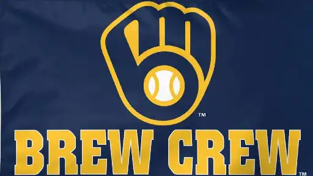

Milwaukee Brewers®
American Family Field
American Family Field is a retractable roof stadium in Milwaukee, Wisconsin. Located southwest of the intersection of Interstate 94 and Brewers Boulevard, it is the home ballpark of Major League Baseball's Milwaukee Brewers. It opened in 2001 as a replacement for Milwaukee County Stadium. The stadium was previously called Miller Park as part of a $40 million naming rights deal with Miller Brewing Company, which expired at the end of 2020. American Family Field features North America's only fan-shaped convertible roof, which can open and close in less than 10 minutes. Large panes of glass allow natural grass to grow, augmented with heat lamp structures wheeled out across the field during the off-season. The stadium opened in 2001 at a cost of $392 million.
Brewers Ace: Freddy Peralta

Freddy Peralta is a talented Dominican professional baseball pitcher who plays for the Milwaukee Brewers in Major League Baseball (MLB). Born on June 4, 1996, Peralta made his MLB debut with the Brewers in 2018. Known for his impressive fastball and slider combination, Peralta has showcased his pitching prowess, becoming a key member of the Brewers' rotation. Despite facing some injury setbacks, Peralta has demonstrated his ability to strike out batters effectively and contribute to his team's success on the mound. His consistent performance and potential for further development make him a promising asset for the Brewers' pitching staff.
History of the "Brew Crew"
The Milwaukee Brewers are an American professional baseball team based in Milwaukee. The Brewers compete in Major League Baseball (MLB) as a member club of the National League (NL) Central Division. The team's name is derived from the city's association with the brewing industry and has been used by several other baseball teams that have called Milwaukee home.[4] Since 2001, the Brewers have played their home games at American Family Field, which was named Miller Park through the 2020 season and has a seating capacity of 41,900 people.